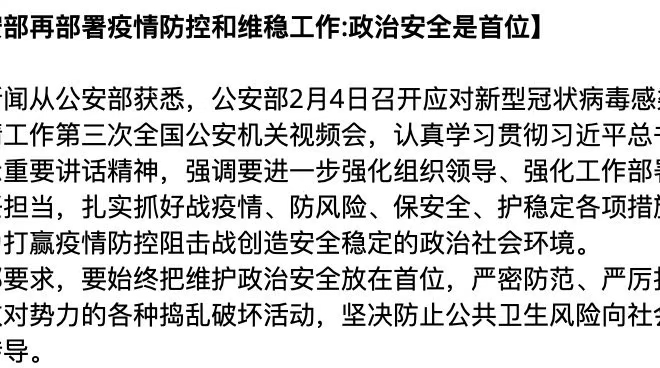

Doctor
2020/2/7

Marriage and Babysitting
2020/4/3
The day before Qing Ming Festival, I went to offer sacrifices for my grandmother, with my father. According my local traditions, we need to add new soils to the place where my grandmother is buried and burn some paper money for the dead. After this formal rite, we went to talk with my elder cousin, who did business of furniture and made big money. My cousin told me to consider girlfriend and marriage as soon as possible and take himself as a good example. I had little consideration on such matter previously but recently I am reconsidering some realistic problems. As a common person, the right way is to graduate within five years, and find a good job, live in a big city, buy a good house, find a good wife and have a lovely baby. All these should be accomplished within my future ten years in common sense. But in other hand, why we are soon anxious, anxious to fulfill the next step of lifespan and anxious to be made sacrifices by our decedents?
Server maintenance
2020/4/5
Recently Fei Ma is starving the server cluster of my lab again. He broke out the rules of 10TB storage limit and asked for 10 GPUs. All were granted by Professor Yang Li. I am very unpleasant about such greed behavior. Though the public resources have some residues, we need to take care to fairly use it and leave some space for other users as well.
Wechat backup
2020/4/7
Recently I tried to backup wechat message from database directly. There are some difficulties in getting the password of the database.
Who invented multivariate Beta function first
2020/4/8
When I am doing some research on related area, I found there is little clue for this question. Wikipedia has an article called "Matrix variate beta distribution" but the normalization constant, which is multivariate Beta function, is not mentioned in reference.
I find a research article of 2013 (Extended matrix variate gamma and beta functions), which said that Ingham invented multivariate Gamma function and Siegel introduces similar concept. I wonder why he does not use the statement that Siegel invented multivariate Beta function. The reference article pointed to was in German with 81 pages long(1935). As I found out, the statement made by Siegel is only a Lemma in his treatise. He introduces an identity related with multivariate Beta function. But he does not consider this topic specifically, let alone introduce the concept explicitly. Then the concept is used by later statisticians with little attribute (maybe it is just because I did not find in detail) to Siegel. Using Google scholar I cannot find even the 2013 article which give references to Siegel's article. It is curious that Siegel is proficient in number theory and his 81 pages long article is also mainly dealing with the number theory topic. Maybe the Beta function extension is his off-topic product.
In the article of Siegel(Über Die Analztische Theorie Der Quadratischen Formen), page 61(original page 587), after introducing the matrix extension of Beta function implicitly, he said:
Da diese Formel weiterhin nicht benutzt wird, so werde nur noch erwähnt, dass sie auf demselben Wege abgeleitet werden kann, auf dem Euler den Zusammenhang zwischen B- und Γ-Function gefunden hat.
Obstacle to go to Mount Tai
2020/4/10
Today my middle school friend told me he did not go to Mount Tai due to possible weather problem. My mother was also very opposing. I am very unpleasant about such opinions. Any way, I can still go there myself if the weather is not so bad.
Teaching English
2020/4/26
When I am in junior school, the English textbook was from People's Education Press. In 2012, new edition was released. It was not a fundamental change. As far as I can remember, I went to English assisting club hold by the father of Ding Ning. He was a teacher of No.28 middle school. Actually he taught no more than 5 units including the international phonetic symbol.
Ordering mac disk
2020/5/4
Today I am trying to delete unused files on my Macbook to save some disk space. Some materials are not suitable be put on GitHub due to their randomness I think. For example, I helped Zhang Xiaobing in 2018/6/28 for a data-processing task, in which I write a matlab script.
Rent
2020/5/5
Yesterday night I went to eat in a Chinese fast food restaurant, near to the place of "Deskmate You". My father told me that this house opened recently in August last year, in place of "Love Lotus Saying". Indeed this house is owned by my father. I forget the familiar position when I chose this place to meet Wang Han about one and half months ago. My father also told me that since the renting fee is pre-paid, these can not be reduced during the pandemic. Also, the place of No.1 high school is used to build new buildings and the business of this food street is influenced to some extent. But still it had some bright future when excellent high school students came back.
Group meeting
2020/5/8
Hi, I am Feng Zhao, third year PhD student. This winter I came to Russia with Fei Ma. We had a winter camp in SanPertergs Polytech University for two weeks. Fei Ma came earlier than me when the virus situation of China was improving. I cam back to China on late Febrary when the situation of Russia and China was quite well. However, there were more than 10,000 confirmed cases each day in Russia and it would be difficult for Chinese to come back. After I came back to China, I stayed at home until now. My hometown is at ShanDong Province. I did some research on Infomation Theory Clustering and some Community Detection problems, guided by Professor Huang and Professor Ye Min.
Reading in high school
2020/5/20
我高中三年读书可以大概划分为两个阶段，以高二寒假为分界线。前一个阶段主要是利用比较短暂的寒暑假读一些课外书，当时看了一些关于孔子的通俗读物，五代和宋代的词等。读书一方面是出于兴趣，另一方面也想多积累一些知识。后一个阶段主要是利用零散的时间读书，比如晨读课、晚自习之后的部分时间，这一阶段开始读一些有难度的经典著作，比如大学、中庸、李清照词、辛弃疾词，当时买了一些英语的课外书，从中还读了一些外国名人的演讲，比如马丁·路德·金的“我有一个梦想”。除此之外，比较系统地读的要说《简·爱》这部长篇小说。每天坚持读几页英文，在高三比较紧张的学习环境下还是在高考前看完了。总体来说，第二阶段读的内容一方面是出于提高古文和英文素养，另一方面也是希望能够对课内的学习有所帮助。现在回顾这两个阶段，发现集中时间读书反而效果不如利用零散时间细水长流效果好。第一阶段我读的书印象没有第二阶段深刻了。